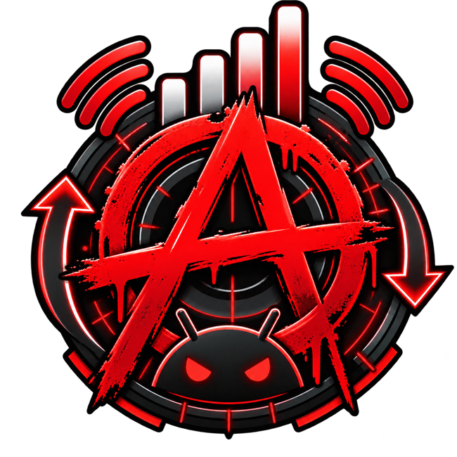

CONTRÔLE CONSOTES DONNÉES.
TES RÈGLES.
Découvre quelles applications utilisent tes données mobiles, même en arrière-plan. Compare les consommations et ouvre leurs réglages Android en un geste.
⬇ TÉLÉCHARGER L’APKCODE SOURCE ↗Android 8.0+ • Installation manuelle • APK de développement (non signé pour la publication Play Store)
01 / SURVEILLANCE
Classement des consommations mobiles de chaque application, sur 24 h, 7 jours ou 30 jours.
02 / VISIBILITÉ
Distinction entre données utilisées au premier plan et en arrière-plan lorsque disponibles.
03 / CONTRÔLE
Accès direct à la gestion Android des restrictions en arrière-plan pour chaque application compatible.
04 / VIE PRIVÉE
Aucun compte, aucune publicité, aucun serveur de collecte. Les données restent sur le téléphone.